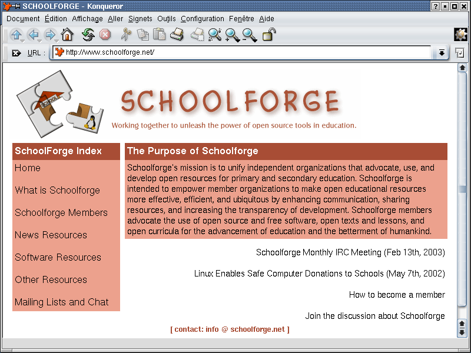

De façon plus ou moins régulière, la colonne TUX&GNU@school [2] vous parle de logiciels éducatifs libres, d'un site web sur ce sujet et d'une idée facile à appliquer. Ce mois-ci, je vais vous parler de QCad [3], un programme libre de DAO 2D, du site web de Schoolforge.net [4] et de l'idée suivante : "les jeunes enfants font de la musique".
Bienvenue dans la 6ème édition. Voilà maintenant environ un an que j'ai publié la première édition [5] de TUX&GNU@school, mais celle-ci n'est que la sixième. Je n'ai pas pu faire un tel rapport "chaque mois" et c'est pour cela que je dis maintenant dans mon introduction "de façon plus ou moins régulière". Mais je vais garder mon objectif d'éditer cette colonne mensuellement et lorsque je serai en mesure de faire cela, je changerai l'introduction à nouveau. Avant d'aller plus loin, je voudrais vous informer de la nouvelle traduction française [6] de cette colonne. Merci pour ton travail, Anne-Marie Mahfouf, grâce à toi nous avons une autre traduction. De plus, sachez que vous pourrez souscrire à notre nouvelle lettre d'information à partir de maintenant. Pour plus de détails, merci de vous référer à notre site web [7]. Voici donc pour les nouvelles nous concernant, passons maintenant à l'introduction du logiciel de cette colonne.
J'ai testé la version 1.4.7 du 24 Mars 2001 sous Debian GNU/Linux [8] (testing) bien que le numéro de version actuel soit 1.5.4. L'auteur Andrew Mustun a choisi la licence GNU GPL comme licence pour son programme. Avec Debian et sur des systèmes basés sur Debian, vous pouvez installer le programme avec "apt-get install qcad". Pour des distributions basées sur rpm, vous pouvez soit utiliser le gestionnaire de paquetage correspondant ou taper dans un terminal : "rpm -i <qcad-packagename.rpm". Mais avant de débuter l'introduction et l'analyse du programme, je dois vous informer que mes connaissances et capacités dans le domaine de la DAO ne sont pas assez bonnes pour vraiment juger de la qualité et de la complexité de QCad. À cause de cela, vous ne trouverez donc ici qu'une courte étude d'amateur. Toute personne qui voudrait en savoir plus pourra se rendre sur le site web [3] et tout particulièrement consulter la documentation plurilingue [9] et volumineuse. Le programme lui-même a aussi été traduit en au moins une douzaine de langues différentes. Ceci est aussi, après le réglage de l'unité de mesure, la première chose que vous pouvez adapter à vos besoins dès le premier démarrage de QCad.
Vous voyez ici l'interface du programme (voir capture d'écran 1), divisée entre la barre de menus et la barre de symboles en haut, la barre des fonctions sur la gauche, la liste des diférents calques et le navigateur des bibliothèques sur la droite. Si vous cliquez sur un symbole de fonction, une menu de sous-fonctions apparaît tandis que si vous le cliquez avec le bouton droit de la souris ou si vous appuyez sur la touche <ESC> vous revenez au groupe précédent de fonctions ou aux fonctions de base. Certaines des fonctions de base sont : les points, les lignes, les arcs, les cercles, créer des textes, les dimensions, créer des hachures, les mesures, donner des attributs et éditer. Ce qui est très positif est que lorsque vous décidez de choisir une fonction spécifique, au milieu de la barre d'état un texte apparaît expliquant les effets sur les boutons droit et gauche de la souris. Vous avez aussi une explication courte de ce que fait la fonction. Sur la partie gauche de la barre d'état vous verrez, lorsque la fonction le permet, les coordonnées absolues et relatives de la position du pointeur de la souris.
Lorsque vous en savez un peu plus sur le programme et sur ses possibilités vous pouvez commencer à construire vos propres traçages. Vous pouvez choisir des dessins pré-définis ou des motifs depuis les bibliothèques de symboles et de dessins qui sont incluses. La bibliothèque contient des exemples de balles, de vis et de parties de dessin de bicyclette. Que serait un programme GNU/Linux comme QCad sans le fameux pingouin TUX (voir capture d'écran 2). QCad contient de plus des soumissions de formes. La barre de symboles en dessous du menu contient surtout des boutons pour des fonctions relatives aux fichiers (Ouvrir, Sauvegarder, etc.), avec des possibilités de zooms différents, les boutons obligatoires Annuler la dernière action et Refaire la dernière action annulée ainsi que quelques boutons de fonctions pour la présentation des lignes ou du plan de travail lui-même.
Lorsque l'utilisateur a terminé son premier croquis, il peut le sauvegarder dans différents formats : Drawing Exchange (*.cxf), EPS (*.eps) ou Font (*.cxf). QCad peut aussi ouvrir et éditer des fichiers Microstation (*.dgn) et HPGL (*.plt *.hpgl *.inc) en plus de ceux déjà énumérés (sauf EPS). Vous voyez maintenant que ce logiciel n'est pas "seulement" utile dans les écoles techniques et pour des travaux spécialisés mais qu'il peut être utilisé par un enseignant qui a quelques connaissances en DAO pour des leçons de géométrie.
Voilà aussi loin que je peux aller dans l'introduction du logiciel de DAO 2D QCad. Il me reste à dire deux choses pour la conclusion : d'abord que QCad a été porté sur différentes plates-formes et donc il ne tourne pas simplement sur les machines les plus communes ix86. Et deuxièmement, un grand merci à Mustun et à toutes les personnes qui l'ont aidé [10] pour ce logiciel merveilleux.
Mais continuons maintenant avec le site web analysé dans cette édition.
J'aimerai cette fois-ci vous présenter le site web de l'organisation responsable du site web schoolforge.net [4]. Mais comme il n'est pour le moment disponible qu'en anglais, cette introduction sera basée sur sa structure. Il est divisé dans les sept sections suivantes : Page principale, Ce qu'est Schoolforge, Les membres de Schoolforge, Nouvelles ressources, Ressources en logiciels, Autres ressources et Listes de diffusion et "chat". Mais avant de continuer la présentation, je dois vous faire remarquer qu'une participation à Schoolforge requiert que vous contactiez obligatoirement la personne qui est le contact de Schoolforge et donc que vous sachiez suffisamment lire et écrire l'anglais.
Sur la première page [4] (voir la capture d'écran 3) vous ne trouverez pas grand-chose si ce n'est une vue d'ensemble pour vous faire une idée générale. En haut à gauche vous pouvez voir le logo de Schoolforge. Puis en descendant, toujours à gauche, la barre de navigation traditionnelle avec les sept éléments cités ci-dessus et à droite vous trouverez le contenu du site web. Sur la première page, il s'agit d'une courte introduction à Schoolforge suivie par les nouvelles les plus récentes. Rappelons que Schoolforge existe déjà depuis le 8 janvier 2002 ce qui signifie qu'il a près de une année et demie d'existence.

Si c'est votre première visite à schoolforge.net, vous serez surement intéressé par l'élément de navigation "Ce qu'est Schoolforge" qui vous apprendra : "Ce qu'est Schoolforge" [11]. À cet endroit est indiqué que Schoolforge n'est pas une nouvelle organisation mais plutôt un parapluie ou un vecteur de communication pour différentes ressources existantes qui ont pour but de promouvoir les logiciels libres dans les écoles. Ainsi l'objectif premier n'est pas seulement la promotion des logiciels libres. Si vous voulez devenir membre, vous devez savoir que vous ne le pouvez pas en tant que simple individu. Seules des organisations peuvent être membres. Et elles définissent une personne comme contact qui représente le vote de cette organisation. De façon générale, Schoolforge essaie d'unir les forces, d'éviter des tâches répétées et de favoriser la communication entre les différents groupes. Un autre élément de référence est celui des "Procédures de fonctionnement de Schoolforge" [12] qui indiquent ce que vous devez faire en tant que membre tandis que "Devenir membre" [13] vous précise comment faire. Vous trouverez ici une courte description de ce que vous devez faire pour devenir membre.
Je voudrais vous montrer en un peu plus de détails les procédures de fonctionnement de Schoolforge. Être membre de Schoolforge veut d'abord dire une communication améliorée car les listes de diffusion sont les points de départ. De plus, Schoolforge est aussi utilisé comme interface commune pour communiquer avec l'extérieur. Tous les membres devraient placer des liens et des références sur leurs sites web comme échange de service. En plus de cela, les membres ont une autre responsabilité : la personne qui est le contact pour le groupe doit contribuer activement, c'est à dire envoyer des messages sur la liste de diffusion de façon régulière. Chaque mois un membre doit s'occuper de réunir les votes si nécessaire sur des questions qui concernent Schoolforge. De plus, un autre membre de Schoolforge est responsable du site web Schoolforge.net et de sa maintenance. La dernière chose que je voudrais mentionner ici est le fait que les nouvelles idées et les projets devraient de préférence être rendus publics et discutés ici pour éviter d'avoir du travail en double et, dans la mesure du possible, pour profiter des acquis et du savoir du groupe..
Lorsque vous suivez le troisième lien dans la barre de navigation, vous arrivez à une page où tous les membres sont inscrits par ordre alphabétique [14]. En haut vous trouverez aussi un lien qui vous envoie vers une liste plus détaillée des membres [15]. Il y a actuellement plus de 140 organisations. Sur la page des "Ressources de nouvelles" [16], vous trouverez des liens vers des sites web qui offrent régulièrement des nouvelles sur le sujet. Certains d'entre eux sont par exemple Opensourceschools.org [17] qui publie un petit journal, seul.org/edu [18] qui offre un rapport [19] tous les quinze jours ou encore les propres listes de diffusion de schoolforge [20]. Les "Ressources en logiciels" [21] contiennent aussi principalement des liens vers les projets correspondants dont je voudrais mentionner certains : l'index des applications [22] de SEUL/edu [17], le sous-projet de Debian [7] intitulé "Debian Jr." [23] et le projet KDE Edutainment [24] dont la personne contact pour Schoolforge est aussi responsable de la traduction française de "TUX&GNU@school" [6]. Sur la gauche de la page "Ressources en logiciels" il existe une liste par sujets des applications les plus récentes ajoutées dans la base de données de SEUL/edu.
Il y a encore d'autres liens vers des sites web intéressants sur le sujet sous le second élément d'"Autres ressources" [25]. En particulier, on trouve la base de données des histoires à succès de Linux dans les écoles [26], un ensemble de liens par sujets [27] et une base de données ouverte des besoins, problèmes et opportunités (NPO) pour l'utilisation de la technologie dans l'éducation [28]. Finalement, ici se trouvent des informations sur les listes de diffusion [20] ainsi qu'un lien vers les archives en ligne de ces listes. Ajoutons qu'il est aussi indiqué comment, quand et où il est possible de rencontrer des personnes sur IRC.
Voilà, c'était une courte présentation deSchoolforge qui est, selon mon humble opinion, une organisation très utile sur le sujet "GNU/Linux à l'école" mais passons maintenant à l'idée de cette édition.
Jusqu'à présent, à cet endroit, j'ai introduit une petite idée qui peut être appliquée et implémentée par un programmeur averti en un rien de temps. Mais je ne suis plus certain en ce moment que ceci soit intéressant car je n'ai reçu aucune implémentation pour mes dernières idées. Est-ce que les idées sont trop banales, trop difficiles, sans intérêt ou que pensez-vous d'autre à ce propos ? Veuillez s'il vous plait m'envoyer vos opinions et vos idées sur cela à [1]. Mais il serait encore plus intéressant pour moi si des idées et des souhaits venaient directement de la pratique, c'est à dire d'enseignants, de professeurs qui connaissent les besoins et ce qui manque sur le terrain.
Néanmoins voici l'idée qui m'est venue lorsque j'ai joué avec Tuxpaint [29] [30]. Bien sûr, tous ceux qui ont essayé Tuxpaint savent que les tampons sont accompagnés de bruitages et de sons. Lorsque vous cliquez plus d'une fois sur le même symbole et que vous ajoutez de temps en temps d'autres tampons, un schéma sonore intéressant apparaît. Il serait sûrement assez simple de créer un petit programme qui contiendrait plusieurs boutons. Ces boutons génèreraient différents sons et bruitages qui s'ajouteraient les uns aux autres. Une fonctionalité d'enregistrement complèterait cette idée et donnerait aux futurs Mozart et Beethoven un outil fonctionnel et utile.Je serais heureux d'entendre un peu de bruit venant de ce coin et je passe maintenant aux nouvelles de cette édition..
La version 1.3 de FREEDUC [31] est sortie il y a quelques semaines. FREEDUC est une Distribution basée sur la bien connue Knoppix [32] et dont l'objectif principal est la démonstration de logiciels éducatifs libres. Les logiciels qui sont présents dans cette distribution sont indiqués ici [33] (Attention : fichier *.txt.gz).
Depuis la première publication [34], du temps s'est déjà écoulé mais je voudrais mentionner ceci encore une fois. Dans les écoles autrichiennes, il est maintenant possible d'obtenir/de donner un certificat GNU/Linux.
Il y a quelques semaines, le BSI - Bundesamt für Sicherheit in der Informationstechologie [35] allemand (Bureau fédéral pour la sécurité pour la technologie informatique) a lancé un nouveau site d'information [36] (en allemand seulement) pour leurs ressortissants. L'information que vous pouvez trouver ici ne concerne pas directement les logiciels libres et GNU/Linux mais est néanmoins très intéressante et facile à comprendre. Ils vous expliquent des termes ordinaires comme "internet" et sa fonction mais ils vont plus loin en évoquant aussi les aspects concernant la sécurité. Je voudrais en profiter pour mentionner l'explication simple de ce qu'est l'internet qui se trouve sur "Sachgeschichten" (histoires sur comment fonctionnent les choses) du site web allemand "Sendung mit der Maus" [37] (qui est aussi une émission de télévision pour enfants en Allemagne). Vous pouvez télécharger ce petit film facile à comprendre ici [38].
Il y a environ une semaine, Bruno Coudoin a sorti la version 3.0 suivie par GCompris 3.1 quelques jours après. Les changements les plus importants sont le dépassement des erreurs dues à la bibliothèque gnome-canvas qui n'avait pas été résolu jusqu'à présent ainsi que la possibilité d'écrire de nouveaux tableaux en python. Il y a de plus quelques nouveaux tableaux comme lors de chaque nouvelle version. Vous pouvez trouver l'information exacte sur le site web de GCompris [39]. Pendant que j'y suis, je ne voudrais pas oublier de féliciter Bruno pour son succès [40] au TropheeduLibre.org [41]. Continue ainsi !
KTouch est disponible avec une nouvelle version depuis quelques semaines, il s'agit de la version 1.3. Vous pouvez voir les changements exacts et les nouvelles fonctionalités sur le site web [42].
SkoleLinux [43] est une distribution de Norvège basée sur Debian qui est faite spécialement pour des buts éducatifs. Il existe aussi un site web allemand [44] et une équipe allemande qui adapte la distribution aux conditions locales. Il n'y a malheureusement pas encore de sortie stable de cette distribution d'avenir pour l'instant. Mais néanmoins la pré-sortie 38 a vu le jour avec un objectif de test il y a quelques semaines. Signalons que SkoleLinux est la première distribution que je connais qui utilise de façon productive le nouvel outil Debian-Installer [45].
Et pour finir, avant que je n'oublie : ceci est la première version de TUX&GNU@school qui est aussi disponible aux formats OGG Vorbis, Wave et MP3 [7] ;-) Allez-y et écoutez-les (en allemand). Au revoir jusqu'à la prochaine fois ...
[1] Veuillez envoyer vos
critiques, questions, commentaires, idées et plus
à : foxman@lugo.ch
[2] Le
site web de TUX&GNU@school :
www.unormal.org/alis/tagatschool6.en.html
[3] Le site web de QCad :
www.QCad.org
[4] Le site web de
Schoolforge.net : www.Schoolforge.net
[5] Première
édition de TUX&GNU@school
[6] TUX&GNU@school
en français
[7] Possibilité
de souscrire à la lettre de diffusion de
TUX&GNU@school
[8] Le site web de Debian :
www.debian.org
[9]
La documentation plurilingue de QCad
[10] La
liste de développement de QCad
[11] Schoolforge.net
-> Ce qu'est Schoolforge
[12] Schoolforge.net ->
Comment fonctionne Schoolforge
[13] Schoolforge.net ->
Devenir membre
[14] Schoolforge.net -> Les
membres de Schoolforge (par ordre alphabétique)
[15] Une liste
plus détaillée des membres de Schoolforge
[16] Schoolforge.net
-> Nouvelles ressources
[17] OpenSourceSchools.org
- Des nouvelles OpenSource à l'école et dans
l'éducation
[18] La page web de
SEUL/edu : www.seul.org/edu
[19] Rapports de
SEUL/edu
[20] Schoolforge.net ->
Listes de diffusion et "chat"
[21] Schoolforge.net ->
Liste des logiciels
[22] Index des applications de
SEUL/edu
[23] Le site web
du sous-projet de Debian "Debian Jr."
[24] Le site web du projet KDE
Edutainment : edu.kde.org
[25] Schoolforge.net -> Autres
ressources
[26] Une base de
données de SEUL/edu avec les histoires des réussites
et des études de cas sur Linux à
l'école
[27] Une collection de liens de
SEUL/edu
[28] Une base de
données libre des besoins, problèmes et
opportunités (Needs, Problems and Opportunities NPO) pour
l'usage de la technologie dans l'éducation
[29] Le site
web de Tuxpaint : www.newbreedsoftware.org/tuxpaint
[30] La
cinquième édition de TUX&GNU@school
[31] Le site web de
FREEDUC
[32] Le site web de Knoppix :
www.Knoppix.de
[33] La liste
des paquetages de FREEDUC
[34] "Les
certificats Linux pour les élèves autrichiens" sur
Pressetext.at
[35] Le site web du "Bundesamtes
für Sicherheit in der Informationstechnik - BSI" allemand
(Bureau fédéral pour la sécurité en
technologie informatique ) : www.bsi.de
[36] Le nouveau site web
d'information du BSI : www.BSI-fuer-Buerger.de
[37] Le site web du
"Sendung mit der Maus" allemand -
wwww.Sendung-mit-der-Maus.de
[38] Lien de
téléchargement de Sachgeschichten-Video
"Internet"
[39] Le site web de
GCompris : www.ofset.org/GCompris
[40] GCompris sur
tropheesdulibre.org
[41] TropheeduLibre.org
(en français)
[42] le site web de KTouch :
Ktouch.sourceforge.net
[43] Le site web de SkoleLinux:
www.SkoleLinux.no
[44] Le site web en allemand de
SkoleLinux : www.SkoleLinux.de
[45] Un site web
sur le nouveau Debian-Installer
Mario Fux a fini en 1999 le PrimarlehrerInnenseminar à Brig après avoir terminé un diplôme en mathématiques et en sciences naturelles. Il fonda avec deux collègues les "ALIS - Arbeitsgruppe Linux an Schulen" (groupe de travail suisse pour promouvoir Linux à l'école). Et lorsqu'il ne passe pas son temps devant son PC, il est assis à regarder la nature dans les montagnes.
Ce document est distribué sous les termes de la GNU Free Documentation License.
Copyright (c) 2002 Mario Fux. Permission is
granted to copy, distribute and/or modify this document under the
terms of the GNU Free Documentation License, Version 1.2 or any
later version published by the Free Software Foundation; with no
Invariant Sections, no Front-Cover Texts, and no Back-Cover
Texts.
Vous pouvez trouver une copie de la licence à http://www.gnu.org/licenses/fdl.html.